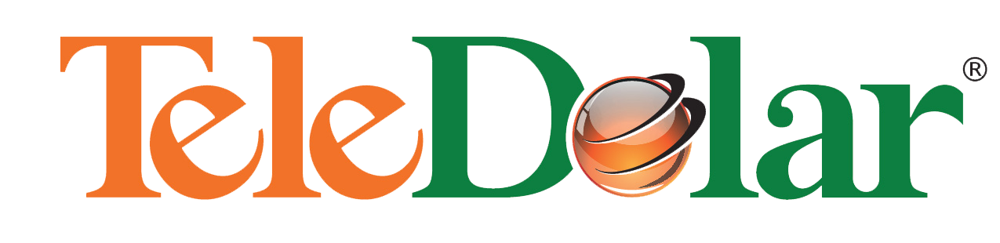
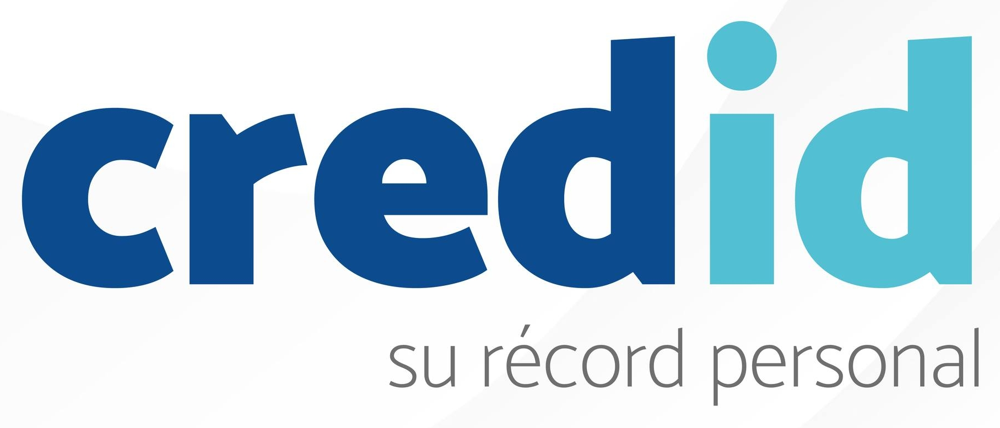

Desarrollo de software a medida
Plataformas web, móviles y sistemas empresariales diseñados alrededor de sus procesos, no al revés. Arquitecturas escalables, seguras y listas para crecer con su negocio.
Desarrollo de software · Inteligencia artificial aplicada
Diseñamos y construimos productos digitales a la medida — plataformas, integraciones y agentes de IA — que convierten procesos complejos en ventajas competitivas.
Confían en nosotros


Servicios
Acompañamos a cada cliente en todo el ciclo de vida del software: desde la definición estratégica hasta la operación diaria, con equipos que se adaptan a su realidad.
Plataformas web, móviles y sistemas empresariales diseñados alrededor de sus procesos, no al revés. Arquitecturas escalables, seguras y listas para crecer con su negocio.
Talento senior que se integra a sus equipos con la metodología, el ritmo y las herramientas de su organización. Capacidad inmediata sin fricción de contratación.
Definimos con usted la arquitectura, el stack y la hoja de ruta tecnológica correctos para su operación, con decisiones fundamentadas en datos y experiencia real.
Mantenimiento proactivo, monitoreo y mejora constante de sus sistemas. Su software siempre actualizado, seguro y funcionando al máximo rendimiento.
Enfoque IA
Integramos modelos de lenguaje y aprendizaje automático directamente en los flujos de trabajo de su empresa, de forma segura y medible. El resultado: operaciones más rápidas, decisiones mejor informadas y equipos enfocados en lo que genera valor.
Procesos operativos que se ejecutan solos: clasificación de documentos, gestión de solicitudes, flujos de aprobación y tareas repetitivas que dejan de consumir horas de su equipo.
Asistentes conectados a sus datos y sistemas que responden, resuelven y ejecutan con el contexto de su negocio, disponibles para su equipo y sus clientes.
Modelos predictivos y tableros inteligentes que anticipan la demanda, detectan riesgos y revelan oportunidades antes que la competencia.
Cómo trabajamos
Entendemos su negocio, sus procesos y el problema real a resolver antes de escribir una sola línea de código.
Definimos alcance, arquitectura y experiencia de usuario con prototipos que validan la dirección desde el inicio.
Entregas frecuentes y demostrables. Usted ve el avance real en cada iteración y ajustamos sobre la marcha.
Puesta en producción, monitoreo y mejora constante. El lanzamiento es el inicio, no el final.
Resultados
de productividad en los equipos que adoptan nuestras soluciones
de costos operativos gracias a la automatización de procesos
menos tiempo de implementación frente al promedio del mercado
de crecimiento promedio en las ventas de nuestros clientes, impulsado por nuestras soluciones
Nosotros
Kabata Soft nació con una convicción: la tecnología solo vale si transforma la manera en que una empresa opera. Por eso cada solución que construimos parte de entender a fondo el negocio de nuestros clientes — sus procesos, sus números y sus metas.
Somos un equipo multidisciplinario de ingenieros de software, especialistas en inteligencia artificial y diseñadores que trabajan como una extensión de su organización. Desde startups hasta corporaciones financieras, nos hemos ganado la confianza de nuestros clientes entregando con calidad, puntualidad y transparencia.
Calidad en cada línea de código, con estándares de ingeniería que garantizan software confiable y mantenible.
Comunicación directa, avances visibles y compromisos que se cumplen. Sin sorpresas.
Adoptamos las tecnologías que marcan la diferencia — no las modas — y las aplicamos donde generan valor real.
Contacto
Cuéntenos qué desafío tiene entre manos. Le responderemos con una propuesta clara de cómo podemos ayudarle.
Escríbanos directamente:
contacto@kabatasoft.com